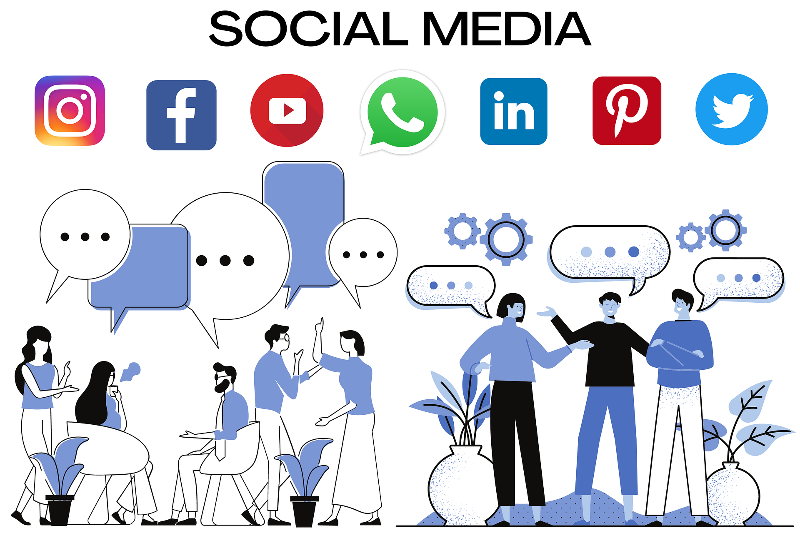
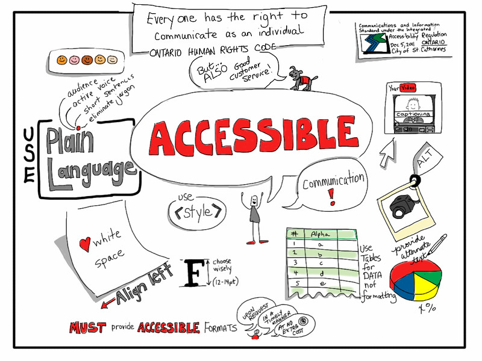

Social Media Guidelines and Expectations
Indiana State University
Social Media focus on building awareness and relationships with audiences. The university's audiences are:
The latest figures indicate that well over 9 in 10 internet users now use social media each month, that equates to annualized growth of 10.1 percent, or an average of more than 13 new users in different platforms. Below is an interactive infographic that shows the real time data of the active social media users in different platforms.
Coupofy. (2022). Social Media in Real Time. Coupofy. Retrieved from http://www.coupofy.com/social-media-in-realtime/
ISU's official accounts can be found on Facebook, Twitter, Instagram, LinkedIn, YouTube, and TikTok. As part of the University's Social Media Guidelines and Expectations, departments and units are asked to complete the Social Media Account Registration Form prior to starting a social media account. If your department or unit already maintains a social media account, please fill out the form and provide the most recent information about your account(s) if you have not done so.
Before creating a new social media account for your unit, please review the social media guidelines and expectations. You should only create a social media account in the name of a recognized ISU entity if you are authorized to do so by your Vice President or Cabinet Member.
The guidelines and expectations apply to all university departments and offices using the Indiana State University name (variations include ISU, Indiana State, Indiana State U) in social media account administration in platforms including, but not limited to, Twitter, Facebook, Instagram, Snapchat, TikTok, YouTube, and LinkedIn. It is not intended to prohibit creative expression but to support, protect, and clarify. Public pages and direct messages are both subject to these guidelines and expectations. This does not apply to personal pages of employees of the institution.
Throughout this lesson, you will encounter Self-Check Questions like the one below. These will help you determine your ability to meet the stated objectives of the lesson. While this lesson mainly serves as a basic information to social media account managers, you might want to earn 80% of the possible points to solidify and demostrate the contents in this resource.
Image: "Social Media" by mohamed hassam in pxhere is under CC0 1.0
In the administration of the account, ISU employees and units must comply with the following:
Please complete the activity to gauge your understanding.
The maintenance of social media account(s) is time-consuming. It will need upkeep and frequent posts in order to grow a following and for it to be an effective means of communication for your department/unit. Before creating any account, think about the time and commitment you need to make in order to be successful.
Some more tips:
Click on the icon below for a quick quiz on New Accounts.
Social Media Registration Form
All social media accounts (new or old) affiliated with Indiana State University must be registered using the form above. As part of the registration process, it is required that you provide the name, phone number and email address for the account manager and a backup manager(s), as well as account information.
Any public post with comments enabled is susceptible to positive or negative comments. Your response or lack of response is also just as public. While not all comments require a response, your attention and response to legitimate and relevant comments are important to people who engage with your site. Plus, comments add to the level of engagement on your account. Maintain positivity in your responses and avoid negative engagement. Try to resolve the issue quickly, in a few responses, and in a private manner, if possible.
Do not delete comments as a way of resolving the issue. However, comments that
may be hidden or deleted and that account may be blocked. If you believe a comment is in violation and should be deleted, contact University Marketing and University Communication before any action is taken. Deleted posts must be documented and a copy maintained.
Inactive accounts reflect poorly on the university. It can also be confusing if a department or organization has both active and inactive accounts. When people are searching for you on social media, they may only find the inactive account(s).
If an account is dormant after six months, the university can delete the account. If you no longer intend to update your account/site, please unpublish or delete it, and notify University Marketing and University Communication.
If you are interested in boosting posts or using your social channels for advertising purposes, please contact University Marketing or University Communication to be sure you are using institutional dollars in the most efficient way to reach your goals.
Secure proper permissions before using photos, videos, and music with your posts.
When taking photos and videos at events, identify who you are and inform your subjects that you are taking the images for social media. Respect requests from anyone who does not want to be a part of the video or photo.
Signed model releases are encouraged and recommended for any image or video in which a person can be recognized and identified. For images captured in public places or at public events where there is a reasonable expectation of being photographed or filmed, model releases are generally not required. However, best practice is to advise those who may be included on the image or video to see if they have any objections, and to adhere to the subject's wishes.
Examples of instances when model releases are required include:
Remember to preserve the integrity of the photo assets. Avoid altering images to change the meaning or message of an image.
Livestreamed events should be well-planned and rehearsed in advance. Administrators should identify potential issues that might occur during livestream. Keep in mind technical and accessibility issues, and that "anything can happen" because it's streaming live.
It's time again to check your understanding!
Image: "Social Media" by jmexclusives is under Pixabay for free usage of image
Image: "Photographer in Normal Hall" is courtesy of ISU, photographed by Tony Campbell
General advice for social media use:

Here are some more points to keep in mind for social media use:
Let's see what you take away from this section.
Image: "Internet Networking Marketing Social Media" is by Max Pixel under CC0 1.0
Failure to comply with these guidelines and expectations will result in:
Here is the quick quiz question!
Image: "Sign" by Manuchi is under Pixabay for free usage of image
If something's accessible, it means that it was designed and developed so that people with disabilities can also use it. Your social posts must be accessible to ensure that posts are inclusive to all individuals. Keeping social media accessible means recognizing exclusion, learning from your followers, and presenting information in the clearest ways possible.
For accessibility reasons, posted photos should include either a caption or alt-text. If the post is a video, closed captioning must be available. Text-to-speech software reads all elements of a web page or social media post – including emojis. Avoid long strings of emojis, or alternating each word with an emoji, to make the experience more accessible to people with visual impairments.

Here are some tips to ensure that your social media posts are accessible for people with disabilities:
It is important to follow the accessibility guildelines in different social media platforms. Here are some links for accessibility guide provided for some social media platforms:
Here is the next quiz to check your understanding.
Image: "Accessible Communication" by Giulia Forsythe is under CC BY-NC-SA 2.0
Below are the resources with links and contact informations that might be useful while creating social media contents or to get information.
Here is a final activity where you will have to distinguish the correct form of social media posts, announcements, events, achievements, and news. Also keep in mind if the posts are accessible or not.
Below are some frequently asked questions by the social media managers.
How many people are on social media?
As of April 2020, a total of 3.81 billion people around the world use social media, putting the worldwide social media penetration rate at 49%.
What does it take to run a social media account?
The resources needed to run a social media account consist of time for planning, posting and monitoring as well as a continuous flow of content. It could take 1-2 hours per day to manage an engaging social media platform.
Can I post the same content on all platforms?
Content applicable to one platform may not be best for another. When determining contents, think about the platform's requirements, your goals, and your audiences. In general, keep the best, most polished editorial content for Facebook. Share quick snippets of information and news on Twitter. Fun and engaging photos and short video should be shared on Instagram. Keep long form video to YouTube.
Do I need to have a presence on all social media platforms?
It is not necessary to create a social profile on every platform. Assess the target audience you are trying to reach and the type of messages you are trying to send to discover which platform works best to achieve your social media goals.
How will I know if what I'm doing on social media is working?
Successful social media posts perform well, meaning they receive a high number of likes, shares and comments. Analytics are available natively through each social media platforms.
Social media guidelines lay down some rules for the accounts associated with Indiana State University. Done right, guidelines can empower the university social media managers with the information they need to make the right choices on social media platforms for the University. It can even turn students, faculty and staff into invaluable ambassadors for Indiana State University. Hopefully, the social media guidelines and expectations provided you with the tools you needed to engage positively, respectfully, and inclusively in different social media platforms.
Below is the link to all Social Media Accounts that are currently known and active on campus. This database contains the type of platform, account name, the link to the account and the account handle or tag. You will have access to this file only if you open through your Indiana State account.
All active social media accounts.xlsx
If your department or organization account is not listed in the database even after you have registered for the the account, then please email University Communication (isu-universitycommun@indstate.edu) regarding it.
That's it for now!
Below you will find a few feedback questions for this lesson. Please share your opinion with us so that we can further improve this product. Thank you.